Midiendo Propiedades de Exoplanetas
Ya sabemos detectar exoplanetas. Ahora queremos medirlos: masa, radio, densidad, temperatura, edad. La idea central de la clase es contraintuitiva pero poderosa: para conocer bien el planeta, primero hay que conocer muy bien la estrella. La ciencia planetaria se volvió física estelar de precisión.
Las dos primeras clases respondieron cómo se detectan los exoplanetas: por velocidad radial (la estrella se bambolea) y por tránsitos (el planeta bloquea luz). Ambos métodos comparten un secreto: en realidad no miramos el planeta, miramos la estrella. Esta clase lleva esa idea hasta el final. Cada propiedad que queremos del planeta —su masa, su radio, su densidad, su temperatura, hasta su edad— se obtiene a partir de una propiedad de la estrella anfitriona. Un error en la distancia a la estrella se propaga a su luminosidad, su radio y su masa, y de ahí contamina todo lo que digamos del planeta. Por eso el profesor repite como mantra: «si conoces bien la estrella, tienes esperanza de conocer bien el planeta». Cerramos con la relación masa–radio (que revela de qué está hecho un planeta) y con la estadística de Kepler, que destapó dos sorpresas: las super-Tierras y el desierto neptuniano.
La gran idea: medir el planeta a través de la estrella
El planeta es invisible o casi; la estrella, no. Todo se cuelga de ella.
El planeta es millones de veces más débil que su estrella y casi nunca lo resolvemos. Incluso los métodos «directos» (imagen del planeta) exigen bloquear la luz de la estrella. Por eso, en la práctica, casi todo lo que medimos del planeta lo deducimos midiendo a la estrella: su masa entra en la tercera ley de Kepler para pesar al planeta; su radio convierte la profundidad de un tránsito en el radio del planeta; su temperatura y luminosidad fijan cuánta energía recibe el planeta.
«Si uno conoce bien la estrella, uno tiene esperanza de conocer bien el planeta.» La ciencia planetaria se ha transformado en un área de física estelar de precisión: lo que antes era un detalle (un error de unas pocas masas terrestres) ahora importa, porque ese «redondeo» puede equivaler a varias veces la masa del planeta que intentamos medir.
Es un problema de propagación de errores en un pipeline: distancia → magnitud absoluta → luminosidad → radio y masa estelar → masa, radio y temperatura del planeta. La incertidumbre de la primera etapa se arrastra y amplifica aguas abajo. Mejorar el nodo raíz (la distancia, gracias a Gaia) reduce el error de todo lo que depende de él. Es el mismo razonamiento que priorizar la calidad del dato de entrada antes que pulir el modelo final.
¿En torno a qué estrellas hay planetas?
La masa de la estrella manda: fija su temperatura, su energía, su vida y el disco del que nacen los planetas.
Hay planetas alrededor de casi todos los tipos de estrellas: en la secuencia principal (las que queman hidrógeno), pero también en torno a enanas blancas (el primer planeta detectado orbitaba un púlsar; también se conocen planetas en torno a enanas blancas), enanas café (subestrellas), estrellas variables y pulsares. Lo que más determina el sistema es la masa de la estrella: ella fija su temperatura, cuánta energía produce, cuánto vive y cómo es el disco protoplanetario del que surgen los planetas.
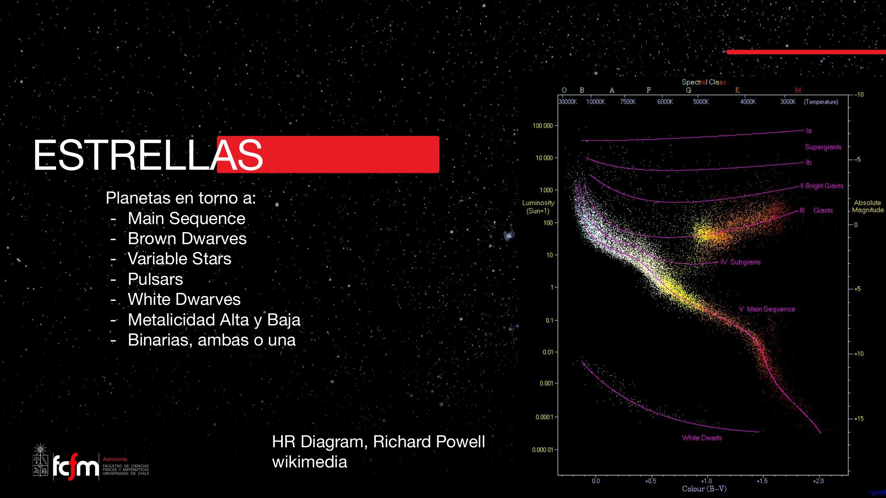
Cerca de la mitad de los «puntitos» del cielo son binarias. Es una suerte enorme: si dos estrellas se orbitan, podemos pesarlas con la 3.ª ley de Kepler y luego asociar esa masa a cantidades fáciles de observar como el color o la luminosidad. Las separaciones van desde varias unidades astronómicas (tamaño del Sistema Solar) hasta estrellas casi en contacto (estrellas de neutrones que, al chocar, emiten ondas gravitacionales).
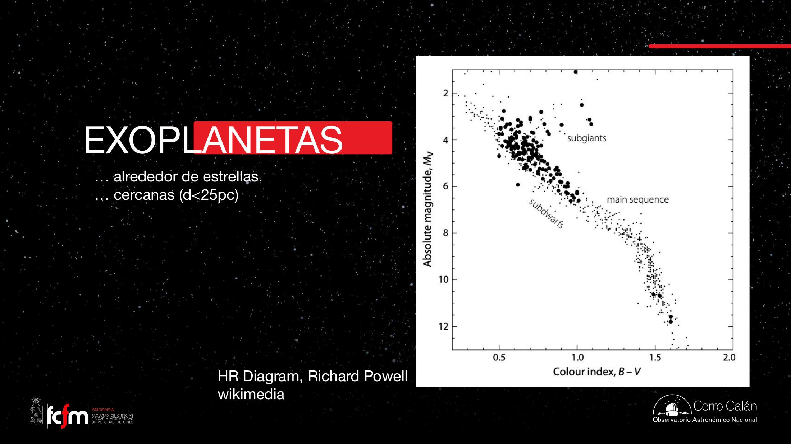
La distancia: la cantidad fundamental (Gaia)
Sin distancia no hay magnitud absoluta; sin magnitud absoluta, no hay luminosidad, radio ni edad fiables.
El color de una estrella es independiente de la distancia, pero su magnitud absoluta —la que tendría a 10 parsec— no. Para colocar cada estrella «a 10 pc» y leer su luminosidad hay que conocer su distancia. El método clásico es el paralaje: el pequeño cambio de posición de la estrella cuando la Tierra se mueve de un lado a otro de su órbita (±1 UA). Un parsec es justo la distancia a la que 1 UA subtiende 1 segundo de arco.
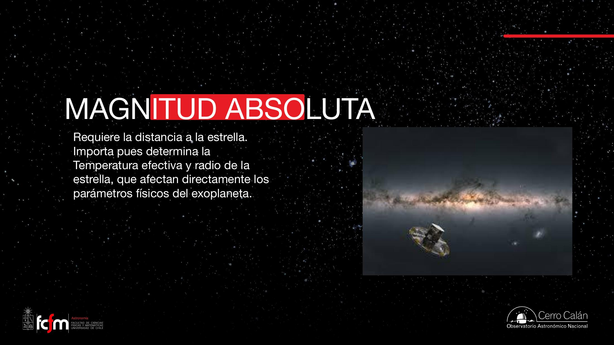
La resolución angular típica desde tierra es de ~0,3–0,5″ (peor que el tamaño aparente del bamboleo). Pero tomando muchas medidas se puede estimar la posición del centro de la estrella hasta ~10 veces mejor que la resolución de una sola imagen. Gaia lleva esto al extremo: detecta estrellas que se mueven por culpa de su planeta y mide distancias hasta más allá de un kiloparsec.
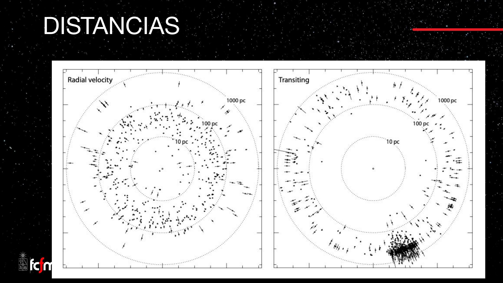
Para un tránsito basta sumar toda la luz de la estrella en un píxel y ver cuánto baja. Para la velocidad radial hay que dispersar esa luz en longitud de onda y seguir una línea de absorción; al estar más lejos, la luz es más tenue y además se diluye en el espectro, así que hace falta observar mucho más tiempo o telescopios más grandes. Por eso el método pierde fuelle con la distancia.
Masa de la estrella: la pesa cósmica de Kepler
La forma más precisa de pesar es la 3.ª ley de Kepler, con período y separación.
La «pesa cósmica» más precisa es la tercera ley de Kepler. Relaciona el período , el semieje mayor (la separación media) y la suma de masas:
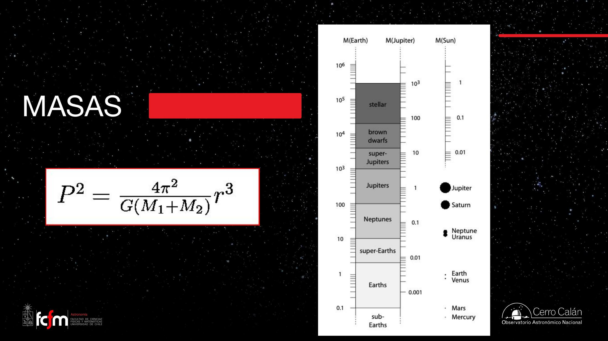
Conocer es la puerta de entrada a su densidad: ¿es un planeta rocoso, candidato a «Tierra 2.0», o una bola de gas? Pero como la ecuación entrega una suma de masas, todo el peso recae en estimar con precisión, y eso se logra calibrando con binarias y con relaciones masa–luminosidad–color.
Es una ecuación con varias incógnitas acopladas: para «restar» la masa estelar de la suma y obtener la planetaria necesitas una medición externa de . Igual que en un sistema sub-determinado, una variable bien medida (la masa estelar, vía color/luminosidad/binarias) desbloquea la otra.
Masa, temperatura y zona habitable
El tipo espectral resume masa y temperatura, y de ahí depende dónde puede haber agua líquida.
La masa estelar tiene una correspondencia casi uno a uno con la temperatura (y con el tipo espectral O–B–A–F–G–K–M). Eso ordena dónde encontramos planetas:
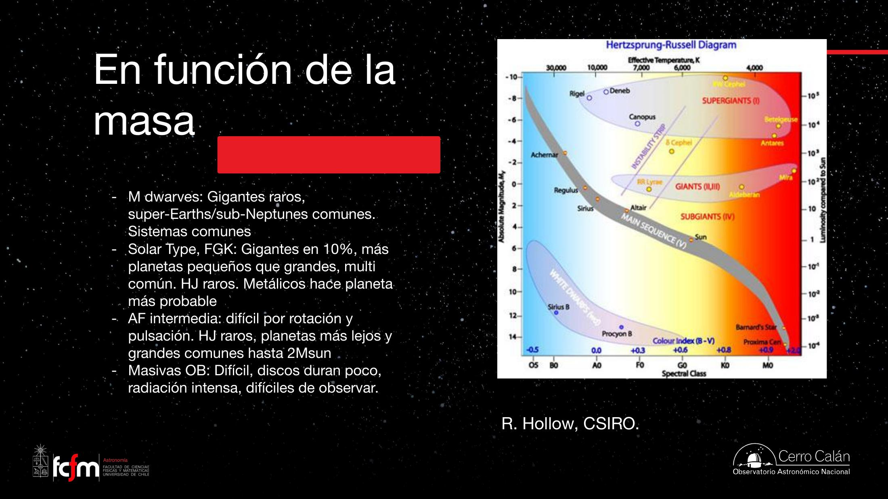
No es (solo) que «acaparen» planetas: es que son las más numerosas y, sobre todo, las más fáciles de sondear. Al tener poca masa, el planeta las zarandea más (mayor señal de velocidad radial); al ser pequeñas, un tránsito bloquea una fracción mayor de su luz. Doble ventaja observacional ⇒ aparecen sobre-representadas en los catálogos. Las masivas OB, en cambio, viven tan poco que apenas alcanzan a formar planetas observables.
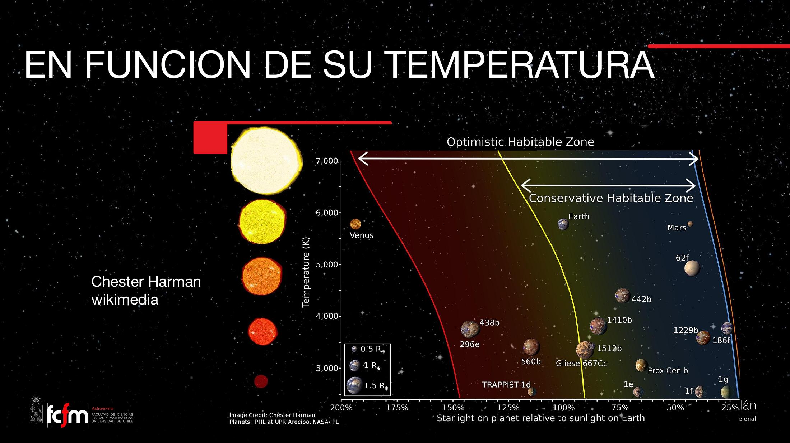
Líneas, diámetro estelar y gravedad superficial
Las líneas de absorción dicen temperatura, composición… y, por su ancho, hasta el tamaño de la estrella.
La superficie de la estrella radia casi como un cuerpo negro, así que su color delata la temperatura. Sobre ese continuo, los gases dejan líneas de absorción en longitudes de onda precisas. El sistema espectral O–B–A–F–G–K–M (ordenado en Harvard por Annie Jump Cannon a partir de esas líneas) es esencialmente una secuencia de temperatura.
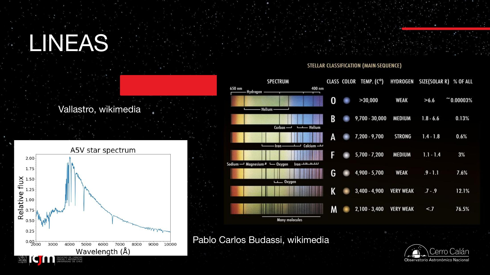
¿Cómo se mide el diámetro de una estrella? Hay dos caminos complementarios:
- Interferometría (instrumento CHARA): mide directamente el tamaño angular de estrellas cercanas. Es complejo pero da el radio físico.
- Gravedad superficial vía ancho de línea (más astrofísico, menos preciso): a igual temperatura/tipo espectral, una gigante y una enana blanca muestran las mismas líneas, pero con anchos distintos.
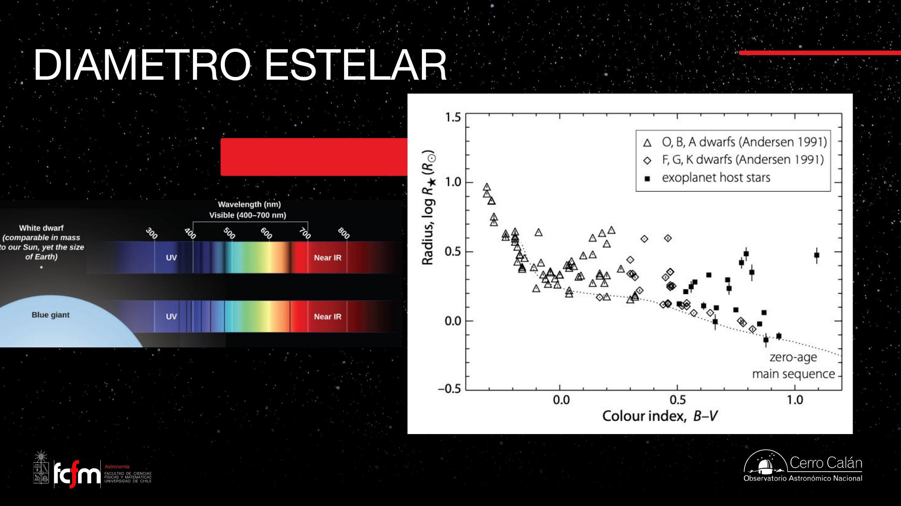
En una enana blanca la gravedad superficial es enorme (mucha masa, radio pequeño): los fotones «luchan» por salir y la presión ensancha las líneas de absorción (ensanchamiento por presión). En una gigante, con gravedad baja, las líneas son más finas. Así, el ancho de la línea codifica ; conocida la masa, se despeja el radio. Es el mismo que sentimos en la Tierra, pero como diagnóstico estelar.
Cuando un planeta transita y bloquea, por ejemplo, un 1% de la luz, significa que su área es 1/100 de la de la estrella, es decir su radio es ~1/10 del estelar (como Júpiter frente al Sol). Pero ese «1/10» es relativo: para obtener el radio físico del planeta hay que multiplicar por . Sin radio estelar fiable, no hay radio planetario fiable.
Radio, densidad y la relación masa–radio
Con masa (RV) y radio (tránsito) se obtiene densidad, y la densidad delata la composición.
El sweet spot de la caracterización es un planeta que transita y además está lo bastante cerca para medirle la velocidad radial. Así combinamos las dos medidas: la masa (de la RV) y el radio (del tránsito). Con ambas:
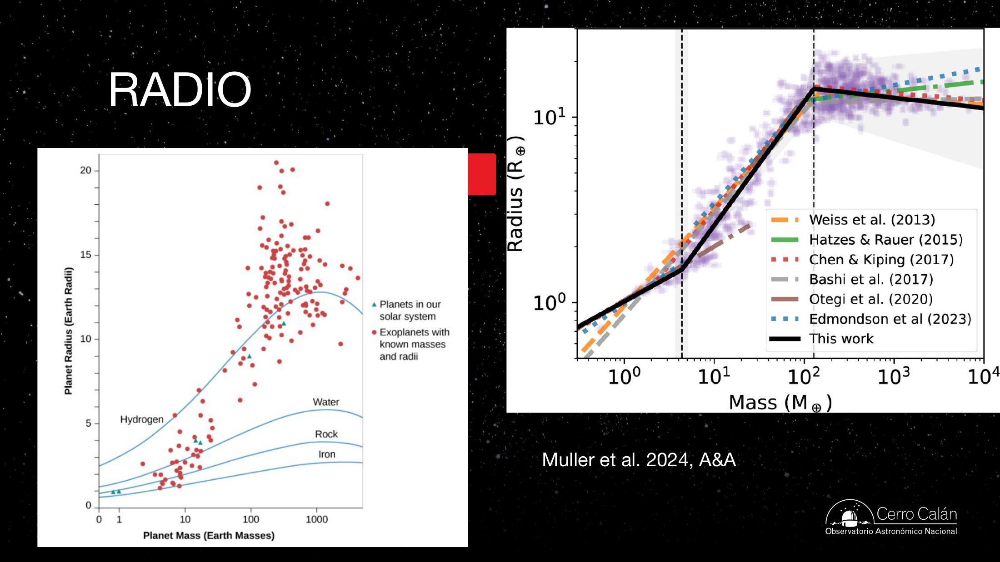
En el Sistema Solar no hay super-Tierras (nada rocoso entre la Tierra y Urano/Neptuno). Pero la relación masa–radio de los exoplanetas sugiere una «ley» entre planetas rocosos y gaseosos. Tomar estas relaciones empíricas y usarlas como si fueran leyes —aún sin entender del todo la física— es una forma legítima de avanzar: es un modelo basado en datos que guía la siguiente pregunta.
La relación masa–radio es un clasificador: el punto (M, R) de un planeta se compara con curvas de referencia (roca, agua, hierro, H/He) y se le asigna la composición más cercana. Es ajuste a modelos físicos más que «caja negra», pero la lógica es la de clasificar puntos por su distancia a fronteras conocidas, exactamente como en aprendizaje supervisado.
La edad de las estrellas (y sus planetas)
Estrella y planetas nacen casi a la vez; datar la estrella data el sistema.
Suposición razonable: la edad de los planetas ≈ edad de la estrella, porque se forman en el mismo colapso de nube. Que casi todos los planetas (incluso exoplanetas) sean coplanares apoya el origen en un disco común; si tuvieran órbitas «a la chuña» sería más fácil pensar que fueron capturados y tendrían edades distintas.
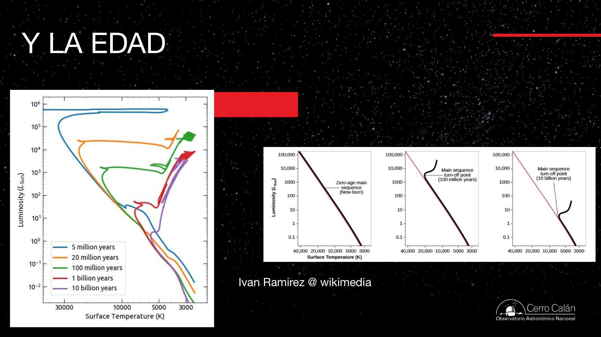
Datar un cúmulo es como estimar la edad de un curso «viendo cuál fue el último alumno en consumirse»: las estrellas masivas son raras y se mueren jóvenes, así que el punto donde la secuencia principal se «dobla» fija la edad. Las edades dependen también de la metalicidad, pero están bien calibradas. Por eso es tan atractivo hallar planetas en cúmulos globulares: heredan una edad muy bien conocida.
Rotación estelar y momento angular
El efecto Rossiter-McLaughlin revela alineación; el momento angular delata planetas.
Durante un tránsito, la estrella rota: una mitad de su superficie se acerca (corrida al azul) y la otra se aleja (corrida al rojo). Cuando el planeta tapa primero el lado azul y luego el rojo, deforma la línea de absorción de manera característica. Ese es el efecto Rossiter-McLaughlin, que permite saber si el eje de rotación de la estrella está alineado con la órbita del planeta.
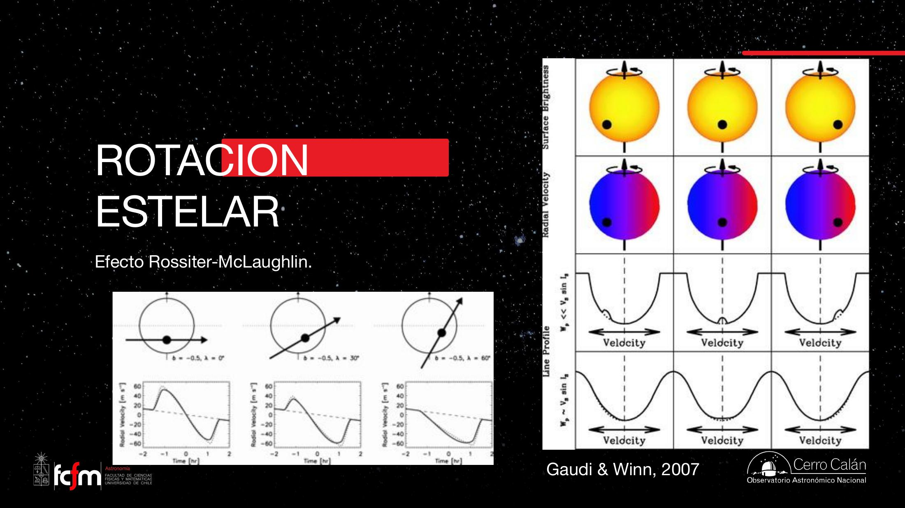
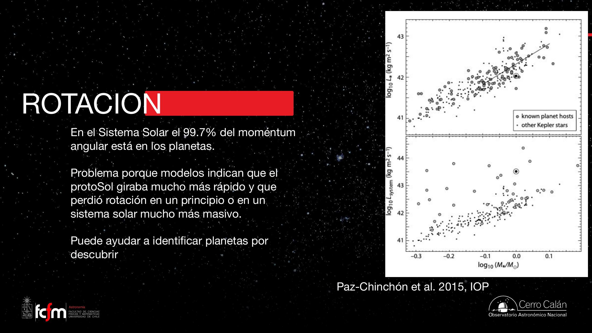
Cuando una nube casi estática colapsa por gravedad, cualquier rotación imperceptible se amplifica: igual que una patinadora que junta los brazos gira más rápido (conservación del momento angular). Esa dirección privilegiada se vuelve el eje de rotación de la estrella y define el plano del disco. De ahí que la rotación estelar y la existencia de planetas estén ligadas: las estrellas que «cedieron» momento angular a sus planetas girarían más lento.
Metalicidad: formación, migración y enriquecimiento
Más metales, más probabilidad de planeta. Pero hay dos historias posibles.
En astronomía, metal es cualquier elemento más pesado que el helio (¡el oxígeno o el hierro cuentan como «metales»!). La metalicidad se mide en escala logarítmica respecto al Sol:
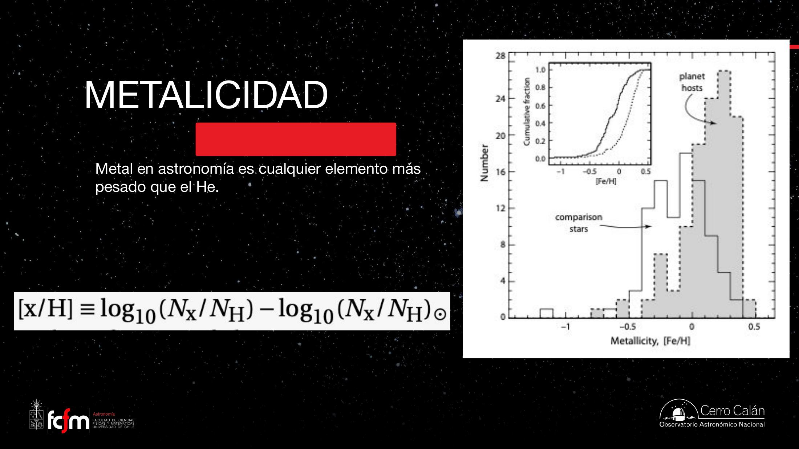
Para comparar las dos poblaciones (con y sin planetas) se usa el test estadístico de Kolmogórov–Smirnov, que mide si dos distribuciones acumuladas son la misma. Resultado: las distribuciones difieren; tener más metales se correlaciona con tener planetas (aunque hay planetas en estrellas muy pobres en metales).
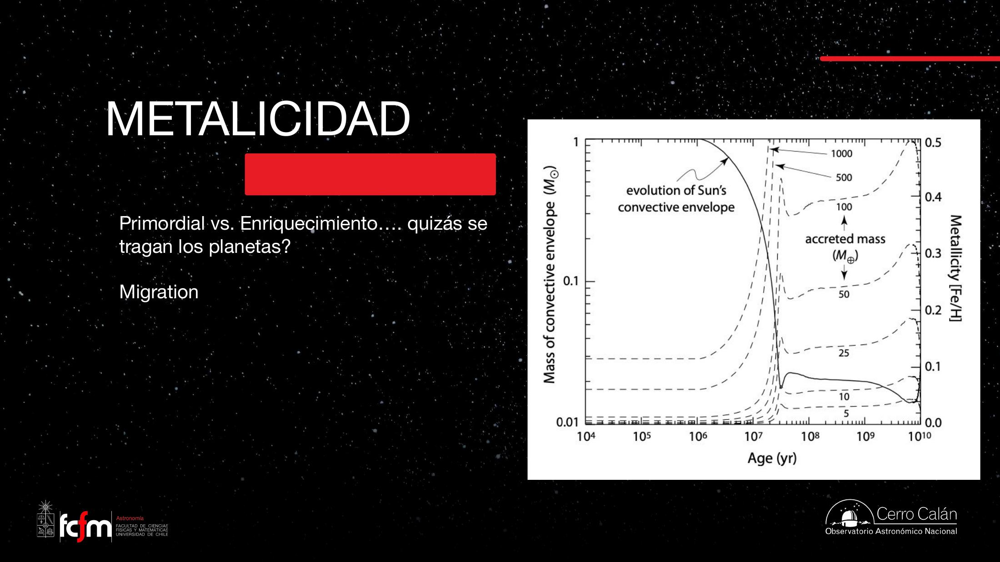
Al formarse, un planeta interactúa con el disco y tiende a migrar hacia la estrella, comiendo masa y creciendo; si no se detiene, cae a la estrella y la enriquece. Los elementos pesados se concentran en la parte central y densa del disco (el asteroide metálico (16) Psyche, hoy visitado por una misión, es lo más cercano a un núcleo planetario desnudo). ¿Se detecta si una estrella se tragó un planeta? Quizá por asterosismología: la masa engullida haría «vibrar» la estrella en modos medibles durante miles de millones de años. Hay candidatos, pero ninguna certeza.
Estadística: super-Tierras y el desierto neptuniano
Kepler corrigió los sesgos y reveló los planetas más comunes de la Galaxia.
Antes de Kepler casi todo eran Júpiters de período corto (lo que la velocidad radial ve fácil). Kepler, al vigilar ~100.000 estrellas con cadencia de minutos durante años y corregir los sesgos, cambió el panorama: los planetas más comunes están entre la Tierra y Neptuno —las super-Tierras y los sub-Neptunos— y… no existen en el Sistema Solar.
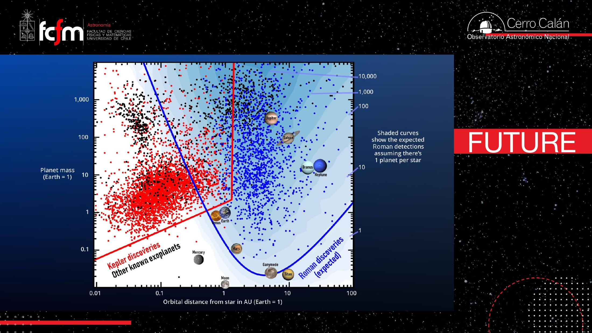
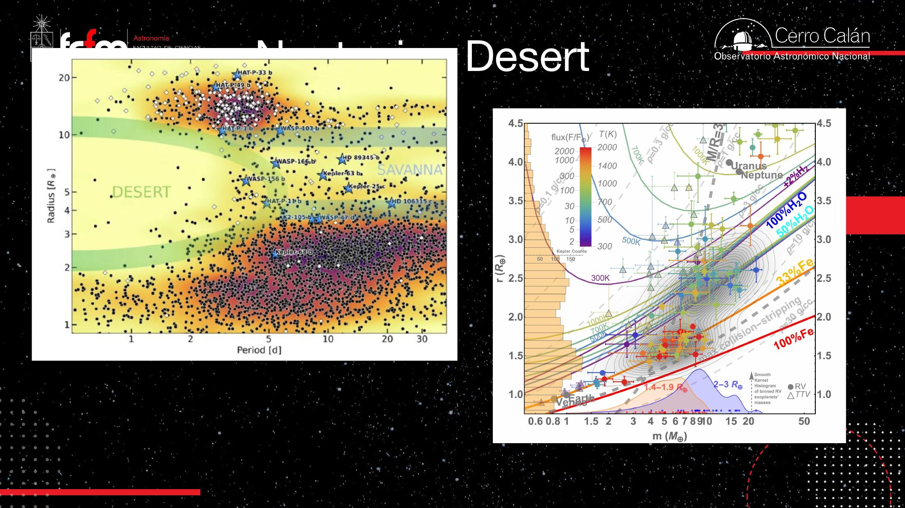
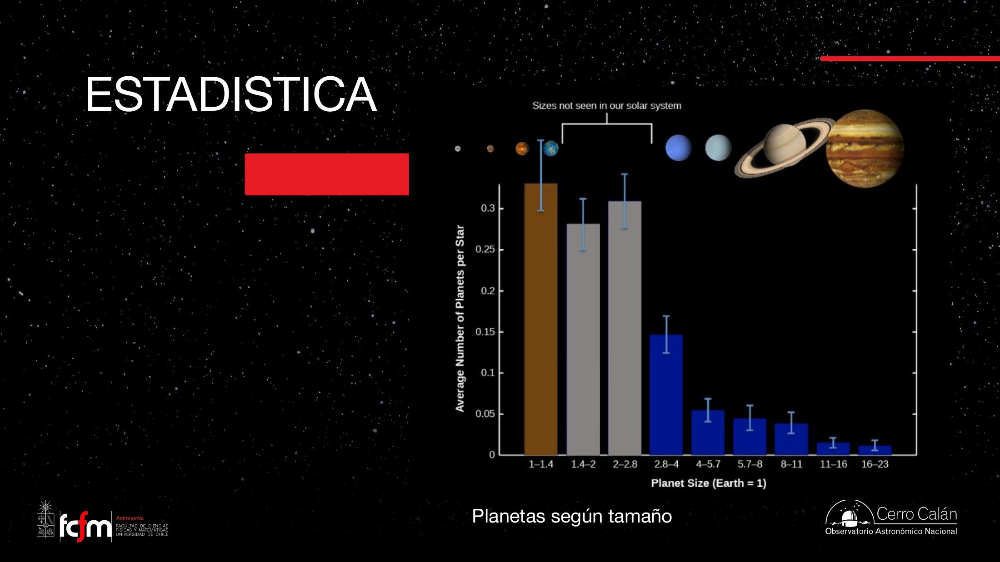
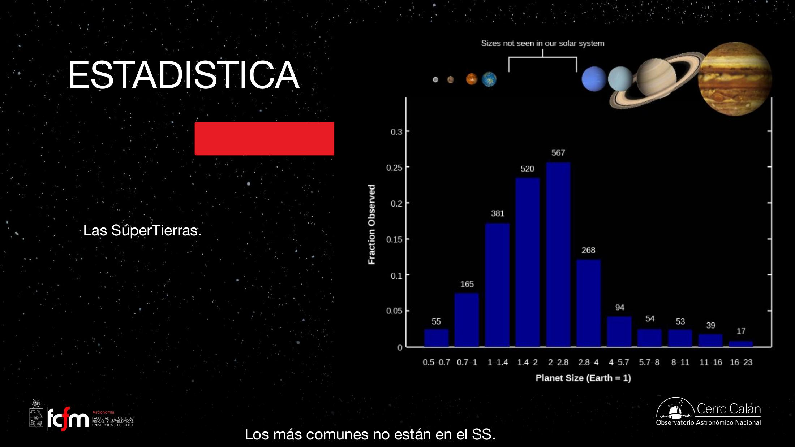
Mensaje central: medir incluso lo más básico —radio, masa, temperatura, distancia— abre un mundo de física interesante (composición, escape atmosférico, migración). Todo método tiene su sesgo, y solo corrigiéndolo (como hizo Kepler) se ve el verdadero censo galáctico. La próxima clase: sistemas con varios planetas y qué aprendemos de ellos. (Aviso del curso: hay una clase de observación con el telescopio —diagrama H–R de un cúmulo, o el color de la Tierra vía «luz cenicienta» de la Luna—; si está nublado, se hará con datos compartidos.)
Conceptos clave
Tabla de repaso rápido.
| Concepto | Qué es / valor | Por qué importa |
|---|---|---|
| Física estelar de precisión | Conocer el planeta exige conocer la estrella | Errores en la estrella se propagan al planeta |
| Distancia / Gaia | Paralaje; Gaia mide microsegundos de arco | Fija magnitud absoluta ⇒ L, R y edad de la estrella |
| 3.ª ley de Kepler | Pesa el sistema; despeja si se conoce | |
| Tipo espectral OBAFGKM | Secuencia de temperatura; M ≈ 76% de todas | Resume masa y temperatura de la estrella |
| Zona habitable | Donde podría haber agua líquida | Se aleja al subir la temperatura/luminosidad estelar |
| Diámetro estelar | Interferometría (CHARA) o ancho de línea () | Convierte profundidad de tránsito en radio del planeta |
| Profundidad de tránsito | 1% ⇒ (caso Júpiter–Sol) | |
| Densidad y masa–radio | Revela composición: roca, agua/hielo o gas | |
| Edad por isócronas | Turn-off de la secuencia principal en cúmulos | Datar la estrella ≈ datar sus planetas |
| Rossiter-McLaughlin | Deformación de la línea durante el tránsito | Mide alineación órbita–rotación estelar |
| Momento angular | ~99,7% en los planetas del Sistema Solar | Estrellas «lentas» podrían tener planetas ocultos |
| Metalicidad [Fe/H] | Logaritmo de metales vs. Sol; metal = más pesado que He | Más metales ⇒ más probable tener planetas (test K–S) |
| Super-Tierras / sub-Neptunos | 1–2,8 R⊕; los más comunes de la Galaxia | No existen en el Sistema Solar (descubrimiento de Kepler) |
| Desierto neptuniano | Falta de Neptunos cerca de la estrella | Escape atmosférico por radiación intensa |
Exámenes de práctica
10 exámenes de 5 preguntas (3 de alternativas autocorregibles + 2 de respuesta escrita).
- Examen 01Medir vía la estrella
- Examen 02Estrellas anfitrionas
- Examen 03Distancia y Gaia
- Examen 04Pesa cósmica de Kepler
- Examen 05Masa, temperatura, habitabilidad
- Examen 06Líneas y diámetro estelar
- Examen 07Densidad y masa–radio
- Examen 08Edad y rotación
- Examen 09Metalicidad y migración
- Examen 10Estadística e integrador